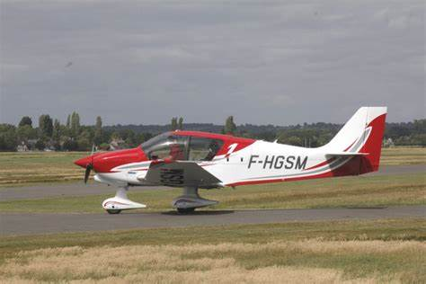

DR401-120

Masses:
Masse à vide: 592 Kg
Masse maximum: 900 Kg
Capacités:
3 Passagers (pilote inclus)
4 heures 24 (vitesse de croisière à 215 km/h) de vol maximum sans arrêt à la pompe
Performances:
Décollage: ≈ 535m (Variable selon les conditions météorologiques, l'état de la piste et la masse totale de l'avion)
Atterrissage: (manque d'information)
Vitesse maximale: 166 noeuds soit 308 km/h
Vitesse de croisière: 116 noeuds soit 215 km/h
Vitesse de décrochage: (manque d'information)